SEGURIDAD
BITACORA
En esta area se visualizara la informacion de los usuarios, las acciones
realizadar en los formularios y el tiempo que las realizo.
-correlativo de la bitacora
-Codigo del usuario
-Host
-Fecha
esto con funcion a llevar y mejorar el control de los movimentos hechos
en el sistema.
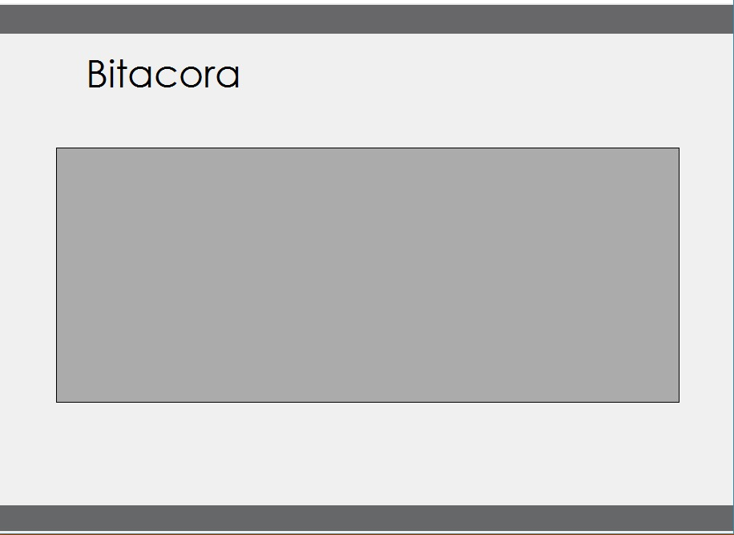
SEGURIDAD
OPCION INCIO DE MENU PRINCIPAL
En esta opcion se compone de:
-Cerrar aplicacion
-Salir
para manupular la salid del sistema y de las aplicaciones.
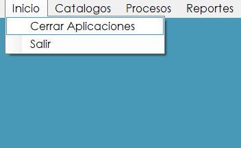
SEGURIDAD
OPCION CATALOGOS DE MENU PRINCIPAL
En esta opcion se compone de:
-Mantenimiento usuarios
-Mantenimiento perfiles
-Mantenimiento modulos
-Mantenimiento aplicaciones
cada una de estas opciones cuenta con:
--ingreso
--consulta
--modificar
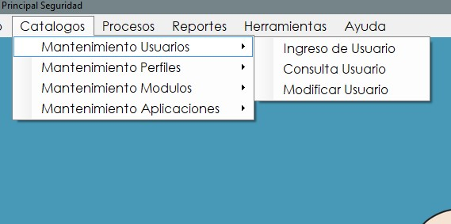
SEGURIDAD
OPCION PROCESOS DE MENU PRINCIPAL
En esta opcion se compone de:
-Asignaciones
que despliega dos opciones mas:
--asignacion de perfiles a usuarios
--asignacion de aplicacion a perfiles
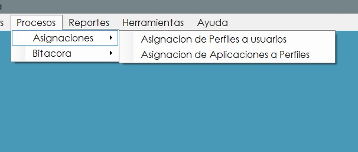
-Bitacora
que despliega dos opciones mas:
--Bitacora general
--Bitacora de Errores
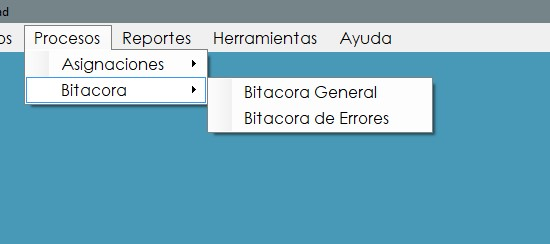
SEGURIDAD
OPCION HERRAMIENTAS DE MENU PRINCIPAL
En esta opcion podemos realizar un cambio al servidor
que deseamos conectarnos.
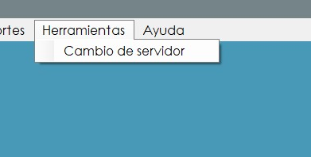
SEGURIDAD
CREACION DE USUARIOS
En esta opcion podemos crear un nuevo usuario
llenando los campos rqueridos.
-nombre del usuario
-contraseña
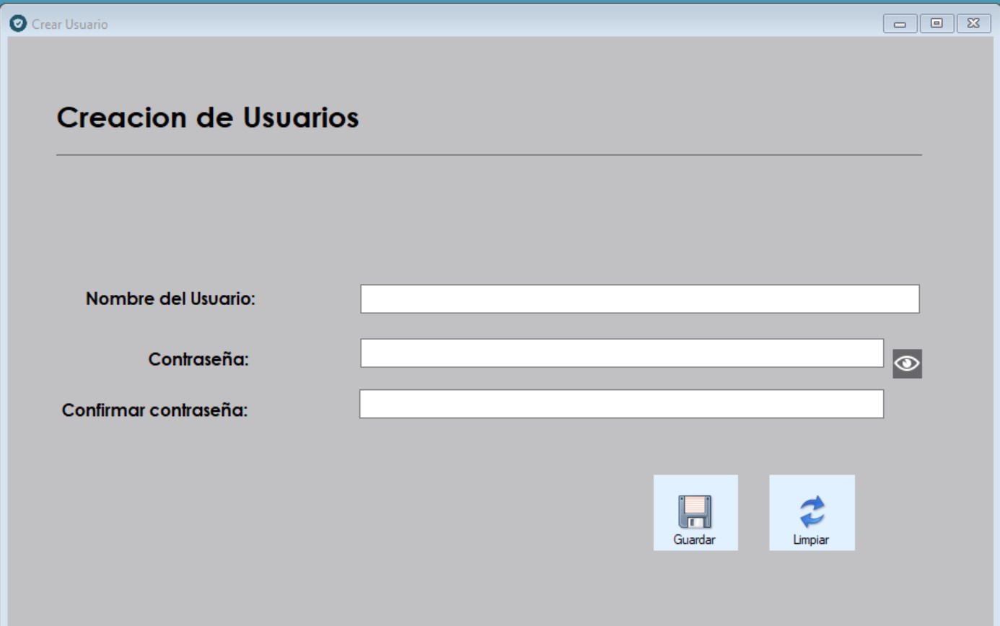
SEGURIDAD
CONSULTAS USUARIOS
En esta opcion podemos visualzar en una tabla
los usuarios existentes.
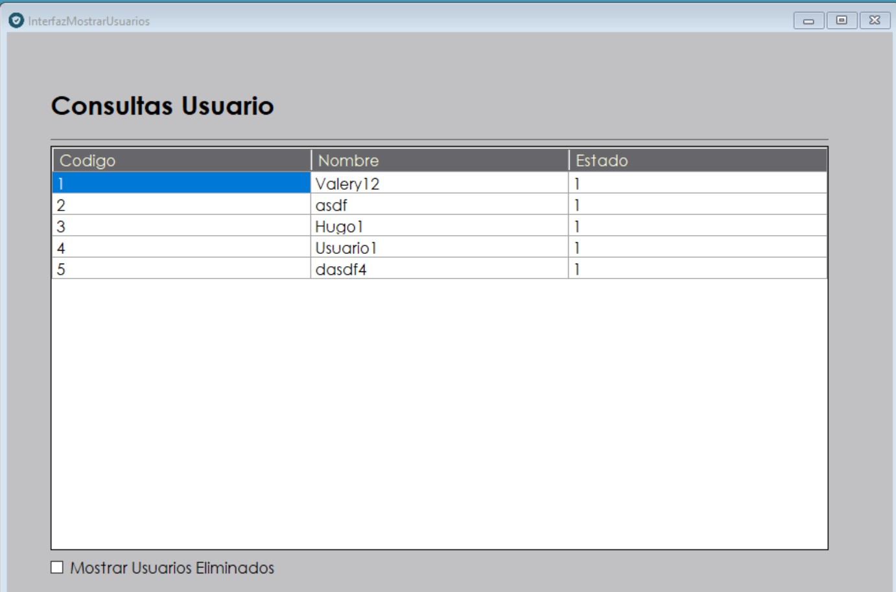
SEGURIDAD
MODIFICACION DE DATOS DE USUARIOS
para modificar la informacion de un usuario primero
seleccionamos a usuario que deseamos modificar
esto ara que los campos de el se llenen y se procede
a reescribir los datos necesarios:
-nuevo nombre de usuario
-contraseña
-estado
para completar la modificacion se procede a dar click
en el boton modificar.
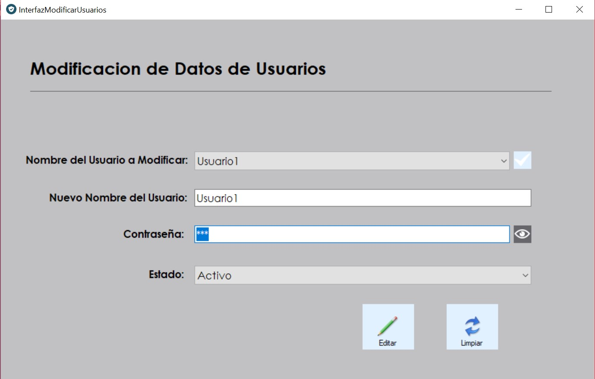
SEGURIDAD
Ingreso de modulos
en este formulacio creamos modulos llenando los
siguientes campos:
-codigo del modulo
-nombre del modulo
porterio a ello procedemos a dar click en
en el boton guardar.
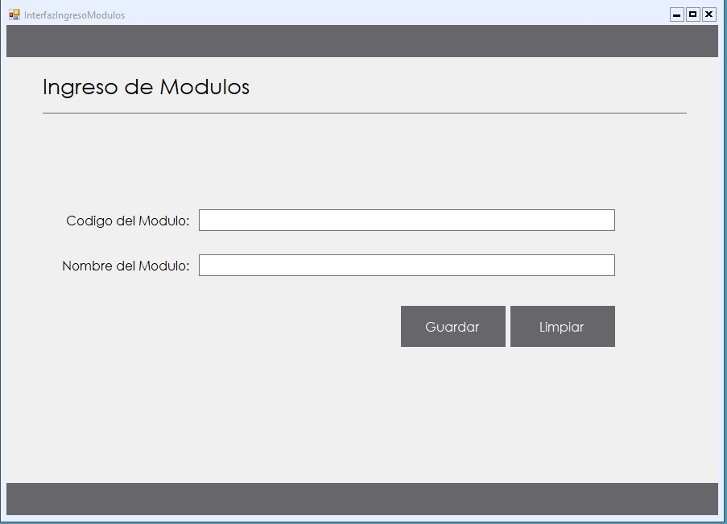
SEGURIDAD
CONSULTAS MODULO
en este formulacio se desplega los modulos
existentes que hay en el sistema
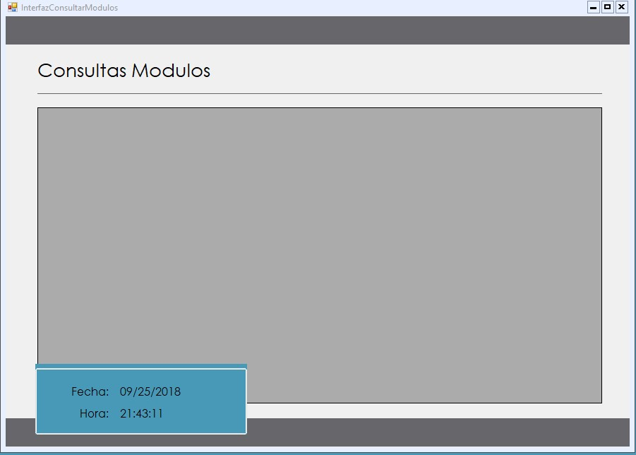
SEGURIDAD
MODIFICACION DE DATOS DE MODULO
para modifiar la informacion de un modulo debemos
seleccionar el modulo que se desea cambiar posterior
a ello en se llena los campos solicitados con la nueva
informacion y damos click en modificar para guardar los
cambios.
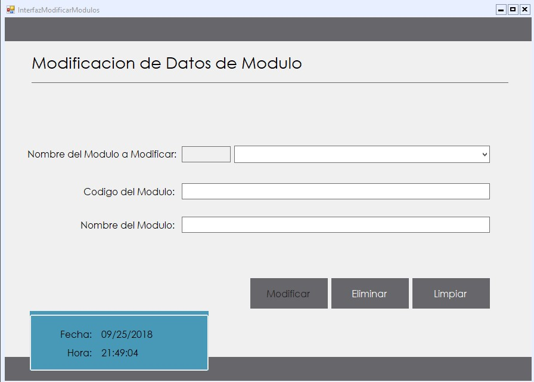
SEGURIDAD
INGRESO DE APLICACION A MODULO
pdemos asignarle aplicacion a un modulo ya existente
llenanlo los campos solocitados:
-codigo de la aplicacion
-nombre de aplicacion
-nombre del modulo
para confirmar la asignacion se procede a dar click en
guardar
SEGURIDAD
CONSULTAS APLICACIONES
en este formulacio se desplega las aplicaciones
existentes que hay en el sistema
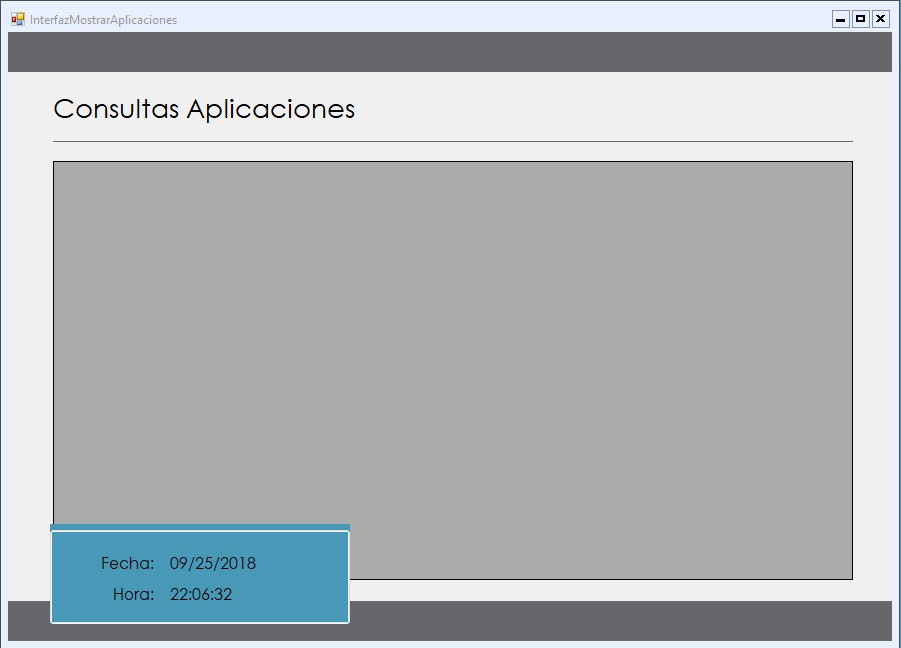
SEGURIDAD
MODIFICACION DE DATOS DE APLICACIONES
para modifiar la informacion de una aplicacion debemos
seleccionar la aplicacion que se desea cambiar posterior
a ello en se llena los campos solicitados con la nueva
informacion y damos click en modificar para guardar los
cambios.
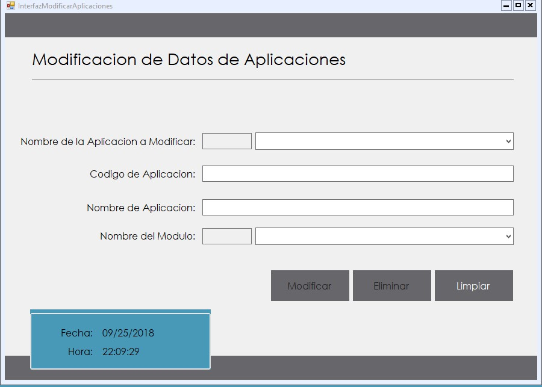
SEGURIDAD
ASIGNACION DE PERFILES
Selecionamos al usuario que se le desea dar permiso
sobre alguna aplicaion
para ello las aplicaciones se enlitaran y se asignan
o se quitan por medio los de los botones
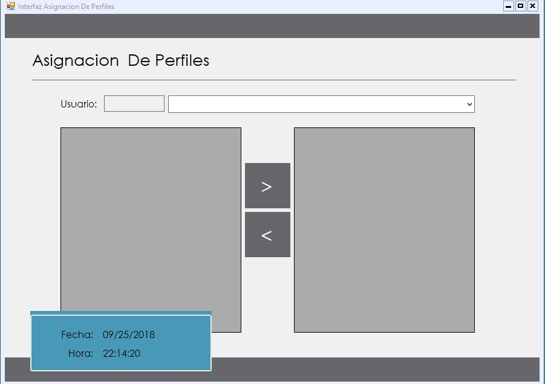
//parte kevin
SEGURIDAD
CREACION USUARIOS
En esta area se debe llenar los campos nombre de usuario y contraseña para crear un nuevo usuario.

al momento de presionar el boton Guardar, este guardada el nuevo usuario creado.
el boton limpiar, le dara la opcion de borrar lo que haya escrito en los campos anteriores.

SEGURIDAD
MODIFICACION DE DATOS USUARIOS
En el primer campo se debe llenar seleccionar el nombre de usuario que se desea modifica. luego en el segundo campo se coloca el nuevo nombre para modificar.
en el tercer campo se coloca la nueva contraseña si se va a modificar, de lo contrario se coloca la misma.el cuarto campo se coloca el estado del usuario Activo/Inactivo.

El boton Modificar guarda los cambios que se hayan realizado. El boton Limpiar le dara la opcion de borrar lo que haya escrito en los campos anteriores.

SEGURIDAD
CAMBIO HOST
En el primer campo se selecciona el nombre del driver que se utilizara para realizar la conexion a la base de datos.
En el segudo campo se cploca el nombre del Host/IP que se utilizara. En el tercer campo se coloca el nombre de la base de datos.
En el cuarto y quinto campo se coloca el usuario y contraseña que tiene el servidor.

El boton Guardar permite almacenar los datos ingresados. El boton Limpiar le dara la opcion de borrar lo que haya escrito en los campos anteriores.
El boton probar permite realizar una prueba para verificar si la conexion esta funcionando correctamente.